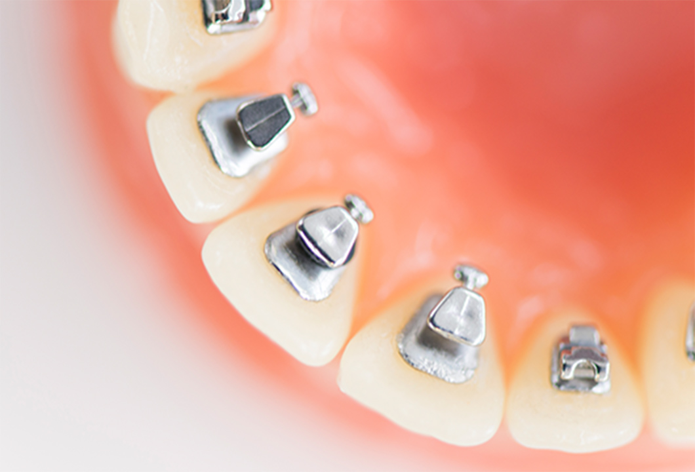
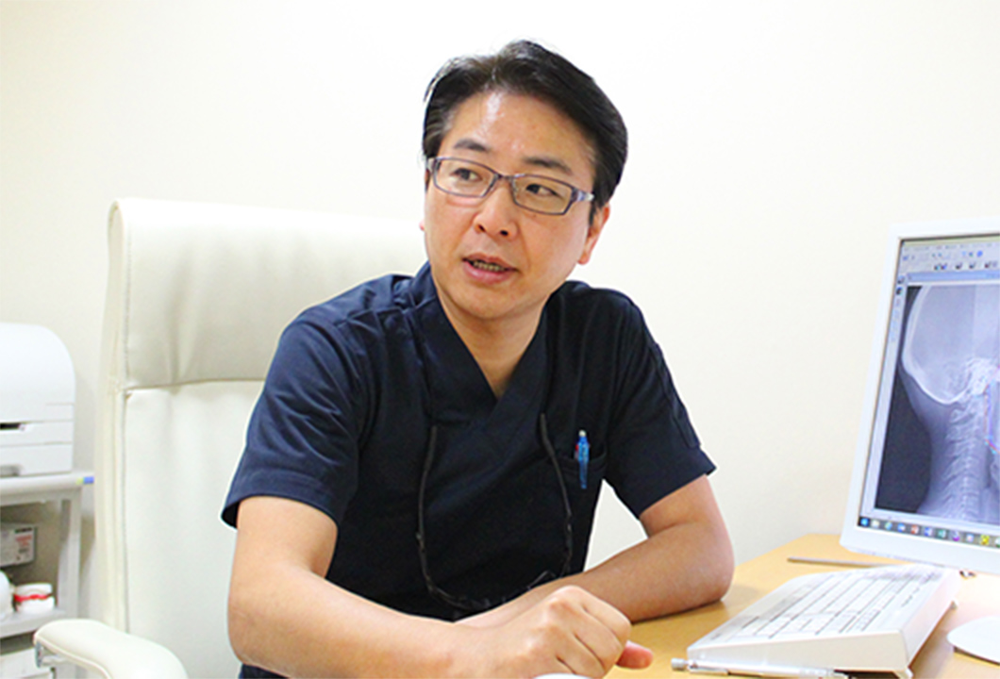
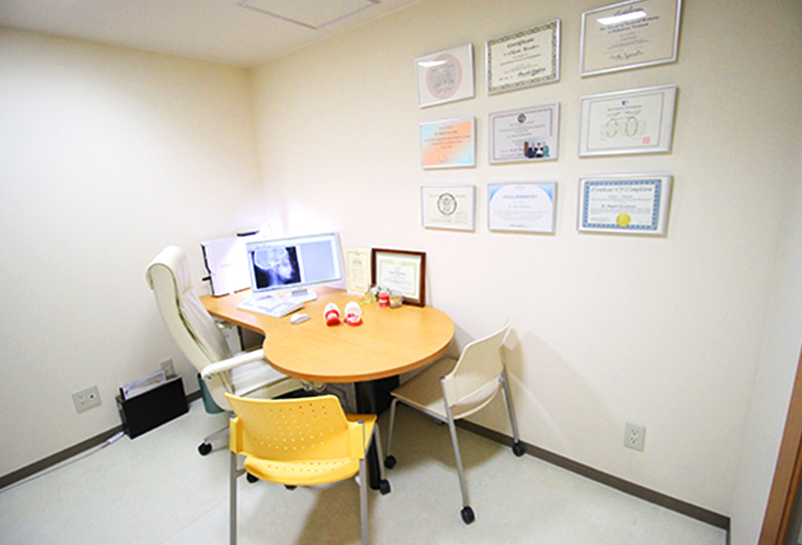
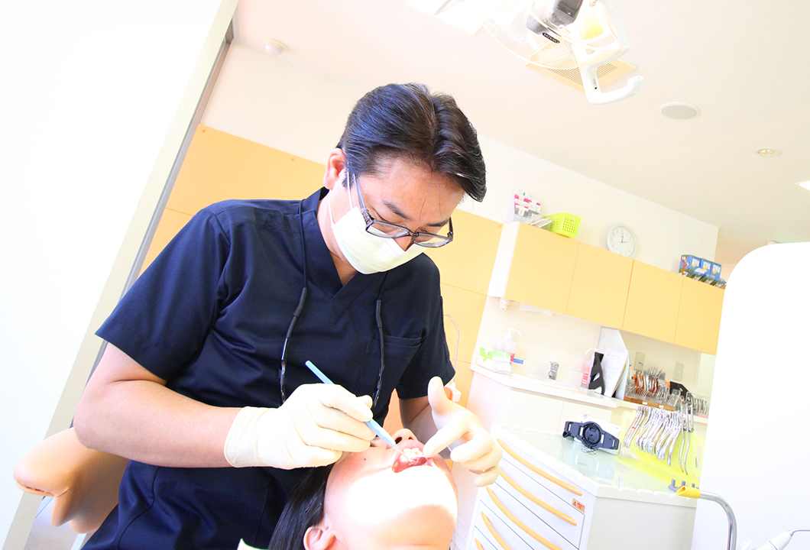
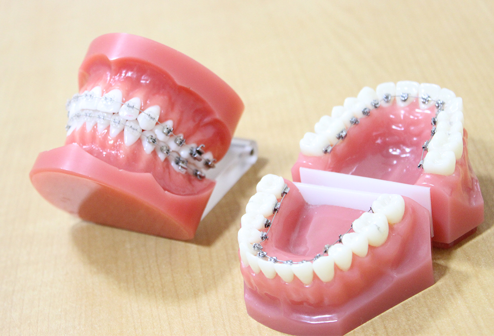
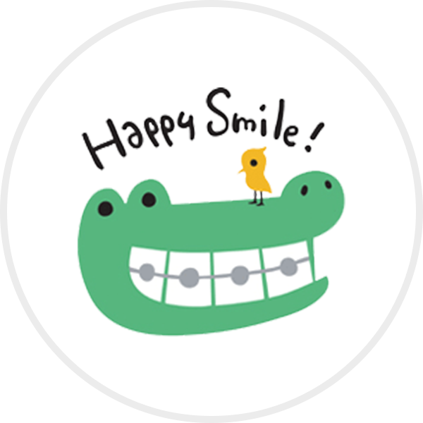

アナタの矯正に ウラガワ の選択を
目立たずに、しっかり治したい
舌側矯正（裏側矯正）の特長は、なんといっても矯正装置が目立ちに
くい点です。歯の裏側に装置を隠すため、笑ったときなどにワイヤー
が
見えにくく、従来の表側矯正と同様の効果を保持し
滑舌などの違和感を軽減した治療を実現 できます。
目立たない矯正治療の
ひとつであるマウスピース矯正ではできなかっ
た、重度の歯並びの乱れにも対応できます。
もちろん、表側矯正やマ
ウスピース矯正も取り扱っているので、
お気軽にご相談ください。
CASE精度が高く、
目立たないウラガワだからできること
人と話す機会が多い方にこそ
働きながらできること
を知っていただきたい
成人男性が矯正歯科治療を行うことで、印象アップやお口と体の健康維持が望めます。とくにビジネスシーンでは、きれいな歯並びによる清潔感は大きくプラスに働いてくれるものです。ぜひ、ビジネスに影響しにくい裏側矯正治療をご検討ください。

接客業などお仕事で、人前で話す機会が多い方
このようなお悩みはありませんか？
- 接客業で目立つワイヤーは避けたい
- 第一印象を変えたい！
- 自分に自信をつけたい！

日頃から歯並びが気になって困っている方
このようなお悩みはありませんか？
- 矯正していることを知られたくない
- SNSで口元を隠したくない
- 自然な笑顔になりたい

- 院長倉島茂樹（くらしましげき）
- 所属学会日本矯正歯科学会認定医
日本舌側矯正歯科学会認定医
東京矯正歯科学会
日本口蓋裂学会
GREETING裏側矯正は専門的な知識技術が必要です
裏側矯正は専門医師がいる
歯科医院で
治療することをお勧めします
専門医がいる当院だから
正確で安全な治療を提供できます。
矯正歯科治療を行う際は仕上がりや費用、痛みなど多くの不安がつきものです。そこで、当院はしっかりと患者さまと向き合い、ときには学校や仕事のお話をしながら密なコミュニケーションを取ることで、相互理解や信頼関係を深めながら治療を進めることを基本方針としています。
歯並びを整えるだけではなく、心から元気になる「ハッピースマイル」でお帰りになっていただけるよう、日々尽力しております。
FEATURES患者さまに安心いただくために
当院の3つの特徴
FEATURES.01
全国で60院
日本舌側矯正歯科学会 認定医
実は裏側矯正専門医は限られた存在です
「くらしま矯正歯科」は、全国に60名のみの日本舌側矯正歯科学会の認定医です。限られた歯科医院でしか受けられない裏側矯正のプロフェッショナルが、患者さまに寄り添いながら質の高い矯正治療を提供します。


FEATURES.02
舌側矯正25年の実績
延べ症例数3,000ケース
様々な歯並び、お悩みを解決してきました
「くらしま矯正歯科」の院長・倉島茂樹は、25年間で3,000人もの患者さまの矯正治療を行った実績を持つ経験豊富な医師です。経験と最新の技術によるストレスや痛みの少ない治療で、矯正中も快適にお過ごしいただけます。
FEATURES.03
明確な料金体系
追加の費用はありません
患者さまの負担を少なくするために
当院の矯正費用は総額制（トータルフィー）を採用。最初にご提示した金額以上の費用がかかることは一切ありません。ご予算に合わせて複数の矯正治療法を提案していますので、お支払いに不安がある方も安心してご相談ください。


FLOW治療の流れ
初診相談（約60分）は
無料で対応します
歯並びのお悩みや治療に関するご要望をお聞きします。その後、お口の中を拝見する診察、顎関節はじめお口周りの状態、全身の健康状態などを診査します。
当院では、このときに治療費のお見積もりをご提示します。
Q&Aよくあるご質問
-
Q
矯正治療期間と
通院間隔は
どれくらいですか？A
治療の難易度、歯の動き方による個人差はありますが、通常の治療方法で平均1年半～2年くらいが一般的な治療期間です。通院ペースは1ヵ月に1回が平均的で、矯正の種類によって治療期間に大きな違いがあらわれることはありません。
Q
部分矯正はできますか？
A
はい。当院では部分矯正も行なっています。
ただし、問題がある歯だけに装置をつけて歯並びを整えることはできません。全体の噛み合わせを考えたうえで、どこからどこまで装置をつけるのかについて判断する必要があります。矯正装置をつける範囲や治療期間には、個人差があることをご了承ください。
Q
矯正費用を分割して
支払うことはできますか？A
院内分割払いをご利用いただけば、診断後2年間で無利息の分割払いが可能です。なお、支払い方法は「一括払い」「院内分割払い」「クレジットカード払い」の3つを用意しております。
-

Q
矯正歯科治療は
何歳まで
受けられますか？A
矯正治療に年齢制限はありませんので、何歳になっても治療を始められます。
ただし40代以降になると、歯周病が進行して歯がグラグラになっていたり重度の虫歯が存在していたりする可能性があります。この場合は、先に治療を行ってからでないと矯正治療が始められないケースもあることをご了承ください。また、悪い噛み合わせを何十年も放置すると治療ができなくなる可能性がありますので、できるだけ早い段階で治療を開始することをおすすめします。
Q
しばらく通院できなくても
大丈夫ですか？A
治療の進行は遅れてしまいますが、「矯正装置が壊れて痛い」ということがなければ、診療の期間が空いてしまっても問題ありません。
矯正治療は少しずつ歯を動かす必要があるため、長い治療期間を要します。そのため、出産やけがによる入院、子育てや仕事などの理由により、しばらく通院できなくなってしまうことは珍しくありません。
ただし、通院できない期間中に矯正装置が壊れてしまったときは、なんらかの応急処置が必要になる可能性があります。安全のためにも、一度当院までご連絡ください。
本気で矯正治療を悩まれている方へ
矯正専門医として
お伝えしたいことがありますMESSAGE
川崎市・たまプラーザの「くらしま矯正歯科」は、矯正装置が目立たない舌側矯正（裏側矯正）に特化した歯科医院です。コミュニケーションを大切にする院長・スタッフが、思わず「ハッピースマイル」になってしまうような矯正治療を提案いたします。歯並びだけではなく、お気持ちもケアできる。そんな環境を整えてお待ちしております。
舌側矯正（裏側矯正）の特長は、なんといっても矯正装置が目立ちにくい点です。歯の裏側に装置を隠すため、笑ったときなどにワイヤーが見えにくく、従来の表側矯正と同様の効果を保持しながら、発音や滑舌などの違和感を軽減した治療を実現できます。目立たない矯正治療のひとつであるマウスピース矯正ではできなかった、重度の歯並びの乱れにも対応できます。もちろん、表側矯正やマウスピース矯正も取り扱っているので、お気軽にご相談ください。